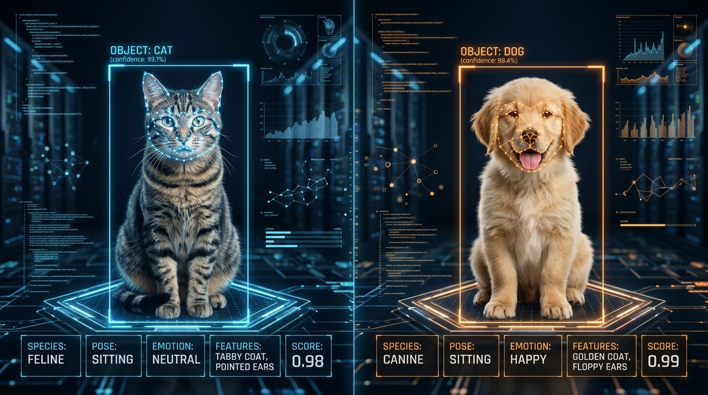
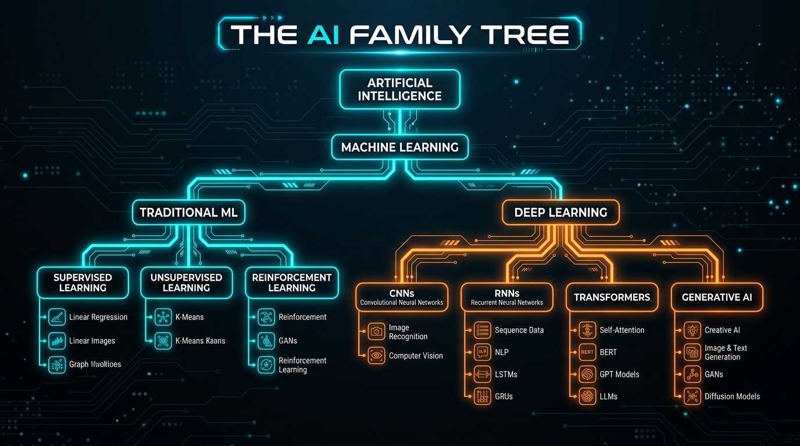
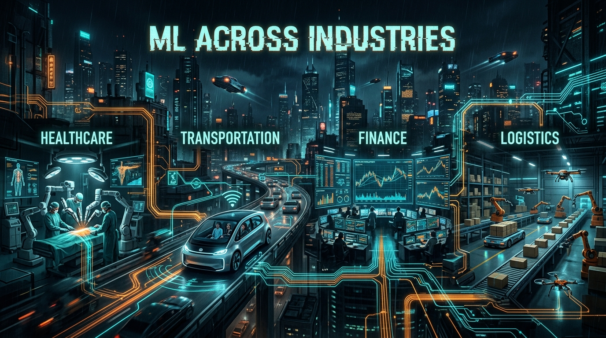

MACHINE
LEARNING
An Introduction to ML, Deep Learning & the AI Ecosystem
Teaching Machines to Learn from Data
Can a machine learn without
being explicitly programmed?
YouTube / Netflix
What should you watch next?
Is this spam?
Phone Camera
What is in this image?
What actually is Machine Learning?
10,000 pictures of cats and dogs. Rules for every possible cat?
Answer: No. That is where ML becomes useful.

HOW DOES ML LEARN?
THE AI FAMILY TREE

Deep Learning
Neural networks with many layers learn complex representations from large amounts of data.
Generative AI
Models that generate new content instead of only classifying or predicting.
MEET GANs
ML IS NOT ONE INDUSTRY.

DON'T START WITH "I WANT TO USE AI."
WHAT SKILLS DO YOU ACTUALLY NEED?
Python • Git • Problem Solving
NumPy • Pandas • SQL • Visualization
Scikit-learn • Regression • Classification • Clustering
PyTorch / TensorFlow • Neural Networks • CNNs • Transformers
APIs • Docker • Cloud • MLOps • Monitoring
DON'T JUST WATCH. BUILD.
AUTHENTIC RESOURCES
- • Google Machine Learning Crash Course
- • Microsoft ML for Beginners
- • DeepLearning.AI Machine Learning Specialization
- • fast.ai • Practical Deep Learning for Coders
- • 3Blue1Brown • Neural Networks